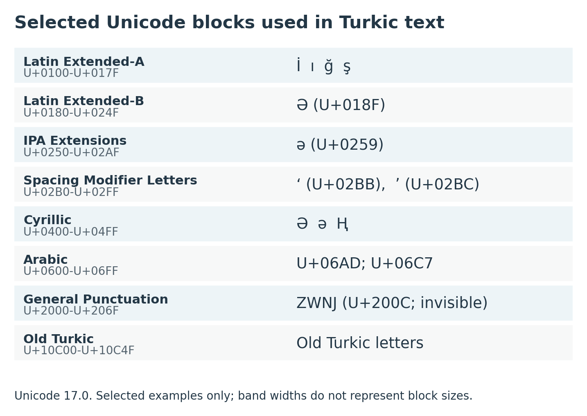
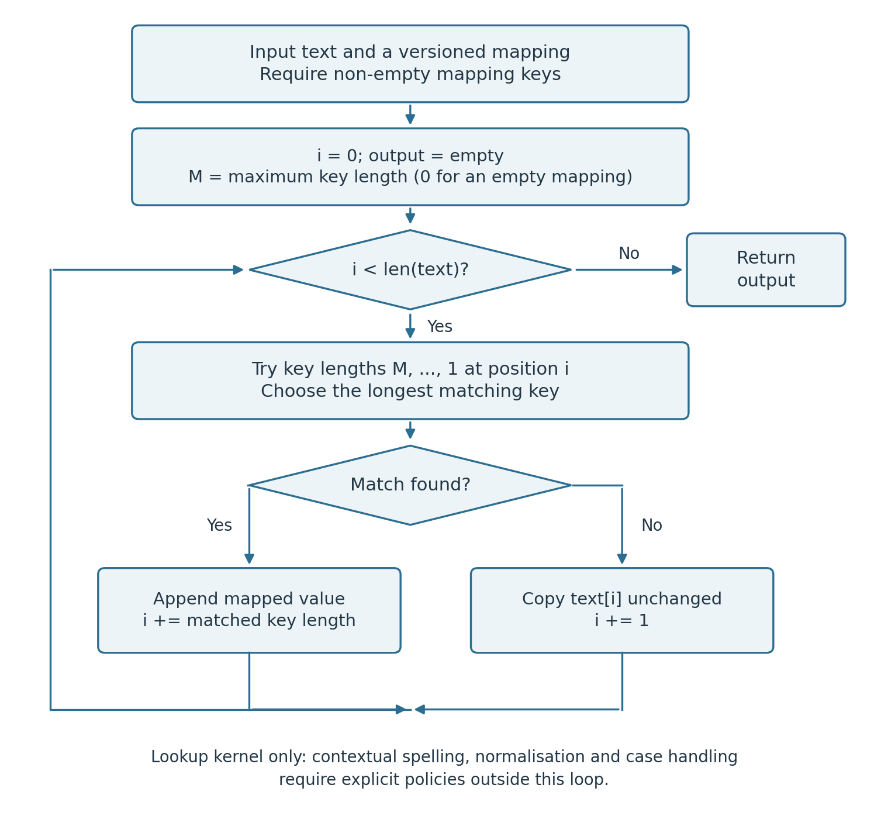
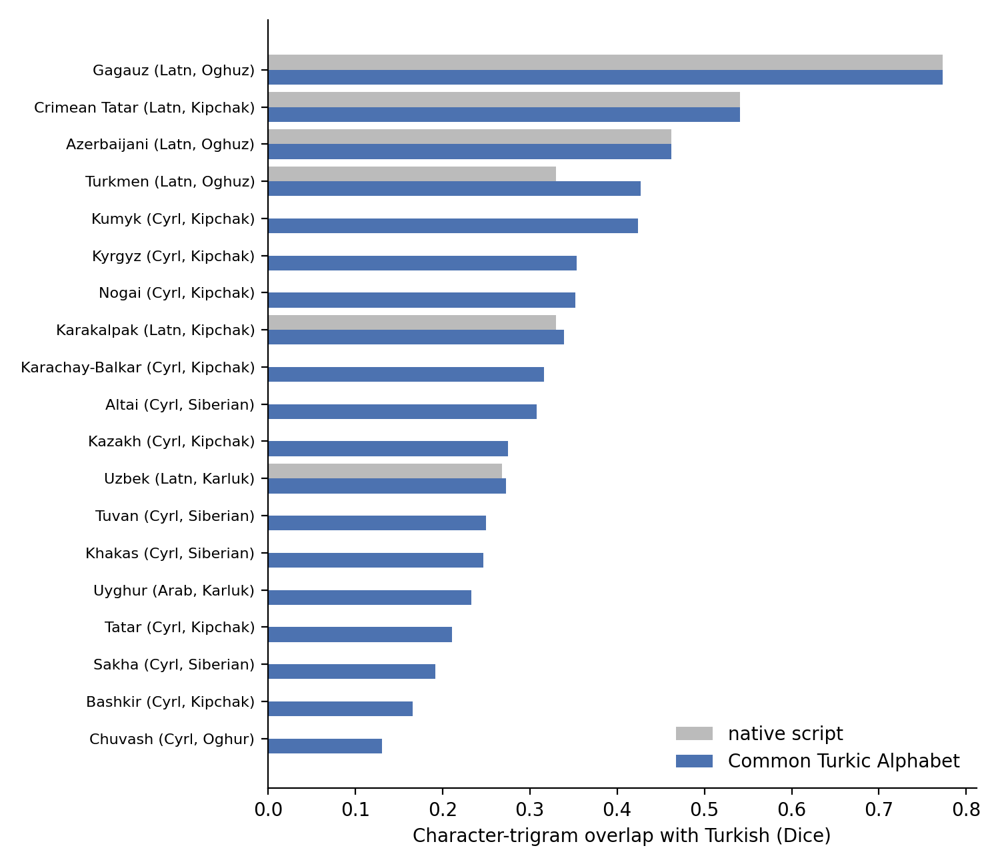
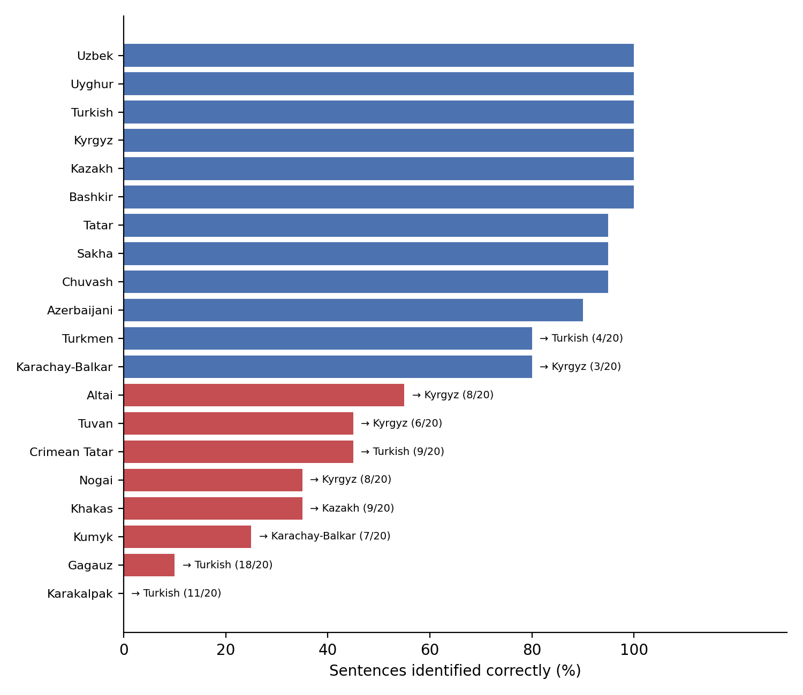

3 Scripts, Encoding, and Orthographic Engineering
After reading this chapter, you will be able to:
- Identify which script each major Turkic language uses and when transitions occurred
- Explain the specific Unicode challenges posed by Turkic scripts, including the Turkish İ/I problem and Cyrillic homoglyphs
- Implement table-driven transliteration with a greedy longest-match algorithm, and explain where context rules and lexicons are needed
- Diagnose encoding problems, and normalise informal Turkic text (diacritic dropping, apostrophe variants, homoglyphs) without destroying genuine content
- Design a preprocessing pipeline that keeps the original text, decides language and script before language-specific repairs, and records every derived view
- Measure how script conversion changes tokenisation cost, and use a common script as a technical interoperability layer
- Identify closely related Turkic languages automatically, including when to abstain, and build a corpus that records language, script, and orthography version
A Turkic corpus may contain several scripts and spelling conventions for the same language. Historical collections add Old Turkic runic, Old Uyghur and earlier Perso-Arabic traditions (Johanson 2021, chap. 19). Processing these texts requires a clear record of the input script, the orthography and any conversion applied.
This chapter answers the practical question: given a corpus of Turkic text, what do you need to do before you can run any NLP tool on it?
3.1 A Map of Turkic Scripts
3.1.1 Contemporary Scripts and Historical Collections
Most contemporary Turkic text uses Latin, Cyrillic or Perso-Arabic script, with conventions that vary by language, region and period. Historical collections add Old Turkic runic, Old Uyghur and other scripts. A preprocessing system must distinguish the script family, the language’s alphabet and the orthographic reform on which a conversion table is based.
Latin. Contemporary Latin orthographies include Turkish, Azerbaijani, Uzbek, Turkmen, Crimean Tatar, Gagauz and Karakalpak. Several reflect reforms after the Soviet period; others have earlier histories (Johanson 2021, 421–25). Kazakhstan has published multiple Latin designs (Section 3.2). A Latin script label alone is insufficient: Turkish ş and Uzbek sh, for example, require different conversion rules.
Cyrillic. Cyrillic-based orthographies are used for Kazakh, Kyrgyz, Tatar, Bashkir, Chuvash, Sakha and several South Siberian languages. Cyrillic alphabets were introduced for nearly all Turkic languages of the Soviet Union between 1937 and 1940, but Chuvash and Sakha have earlier Cyrillic histories (Johanson 2021, 415–20). Each orthography has its own additional letters and spelling conventions.
Perso-Arabic. This script family is used for Uyghur in Xinjiang, Azerbaijani in Iran, and Kazakh and Kyrgyz in China, as well as historical Ottoman and Chaghatay collections (Johanson 2021, 411–13, 419, 423). Modern Uyghur writes vowel qualities explicitly; this facilitates conversion but does not make its orthography a complete phonetic transcription.
3.1.2 Language-to-Script Mapping
| Language | Scripts and regional scope | Historical or implementation note | Source |
|---|---|---|---|
| Turkish | Latin; Perso-Arabic in Ottoman collections | Reform ordained in 1928; the reference discusses implementation in 1929 | (Johanson 2021, 411, 421) |
| Azerbaijani | Latin in Azerbaijan; Perso-Arabic in Iran; Cyrillic in historical material | An early Soviet Latin alphabet was adopted in 1922; this is not the date of exclusive use | (Johanson 2021, 421, 423) |
| Uzbek | Latin and Cyrillic; Perso-Arabic in historical collections | Latin reform enacted in 1993 and finalised in 1995; this does not measure corpus uptake | (Johanson 2021, 424) |
| Kazakh | Cyrillic; Perso-Arabic in China; multiple Latin designs | National designs and the 2026 commission recommendation are distinguished in the section on active transitions | (Johanson 2021, 413, 419, 422); government and TDK sources in the section on active transitions |
| Uyghur | Perso-Arabic in Xinjiang; Cyrillic in Central Asia; Latin transliteration | Johanson dates the pinyin-based script experiment to 1964–1983 | (Johanson 2021, 413, 415, 422) |
| Turkmen | Latin; Cyrillic in older material | The source discusses successive post-Soviet designs; a single date would conceal revisions | (Johanson 2021, 422–23) |
| Kyrgyz | Cyrillic in Kyrgyzstan; Perso-Arabic in Xinjiang | A 2026 commission Latin proposal is documented in the section on active transitions, not treated as national enactment | (Johanson 2021, 419); TDK source in the section on active transitions |
| Tatar | Cyrillic; historical Perso-Arabic and Latin | Soviet Latinisation and subsequent Cyrillic reform are separate stages | (Johanson 2021, 415–18, 422) |
| Bashkir | Cyrillic; historical Perso-Arabic and Latin | Its Cyrillic spelling differs from Tatar despite shared letters | (Johanson 2021, 418–19, 422) |
| Chuvash | Cyrillic | Yakovlev system introduced in 1871–1873; modified in 1938 | (Johanson 2021, 415, 420) |
| Sakha | Cyrillic; historical Latin-based systems | Roman-based designs of 1917 and 1922–1923 precede the modern Cyrillic norm | (Johanson 2021, 415, 420–21) |
| Karakalpak | Latin and Cyrillic | Johanson records a 1997 Latin adoption; the toolkit implements a later 2016 mapping | (Johanson 2021, 425); (Hakimov 2026, sec. 4.2) |
| Crimean Tatar | Latin and Cyrillic; historical Perso-Arabic | Distinguish historical Latinisation from the mapping used by a current converter | (Johanson 2021, 422); (Hakimov 2026) |
The dates in Table 3.1 refer to specific reforms or source accounts. Writers may change script at different times. Record legal adoption, alphabet publication, school implementation and corpus prevalence separately; one transition date cannot describe them all.
3.1.3 Historical Scripts
Historical collections involve two further scripts and two Perso-Arabic literary traditions:
- Old Turkic runic (Orkhon script): used in inscriptions from the early eighth century onward in present-day Mongolia and the Yenisei Basin (Johanson 2021, 159); it has its own Unicode block
- Old Uyghur script (not to be confused with modern Uyghur Perso-Arabic): an alphabet modelled on the Soghdian script, used for Old Uyghur manuscripts (Johanson 2021, 410)
- Chaghatay: the Persian-influenced literary language of Central Asia from the fifteenth century on (Johanson 2021, 162), written with Perso-Arabic conventions; a language and literary tradition, not a separate script
- Ottoman Turkish: written with Perso-Arabic conventions in literature and administration until the 1928 reform
These historical scripts are relevant for heritage document digitisation and require specialised OCR (Section 17.2.2). For Ottoman Turkish, two UD treebanks exist (Chapter 8), and TurkicNLP converts Latin transcriptions into Perso-Arabic script and processes Ottoman text with a dedicated Stanza model (Hakimov 2026); Old Turkic runes can be converted to Latin transcription. An annotated Chaghatay manuscript corpus contains about 30,700 words (Steimel et al. 2020).
3.2 The Active Transitions
3.2.1 Kazakhstan: Published Designs and Implementation
Kazakh corpus processing must distinguish several published Latin designs. The following milestones explain the mappings encountered in this book; they are not a legal-status register:
2017: A first version that marked the specifically Kazakh sounds with apostrophes after a base letter (e.g., a’ for ә, s’ for ш, n’ for ң), while қ was already written q (Qazaqstan). Apostrophe-based letters are fragile in digital text: keyboard and typographic apostrophes are different Unicode characters, which breaks search and indexing.
2018: The revised alphabet used acute accents such as á, ǵ and ń, but wrote ш with the digraph Sh sh, not ś; see the reproduced appendix to Decree No. 637 of 19 February 2018.
2021: A further revision with Turkic-style diacritics, e.g. ä (ә), ğ (ғ), ñ (ң), ö (ө), ş (ш), ū (ұ), ü (ү), released as a draft for public discussion. The 2023–2029 language-policy concept makes the transition schedule depend on a further legal act. These documents show that a draft and a policy framework were published. The current legal status of any later alphabet has to be checked elsewhere.
2026: The Turkish Language Association reports that the common-alphabet commission accepted Kazakh and Kyrgyz alphabet proposals as reference documents at its meeting on 15 June 2026. A commission recommendation is not national enactment. The toolkit mapping described below does not implement a newly inferred 2026 standard.
For Kazakh-to-Latin conversion, this book uses the toolkit’s table based on the 2021 proposal. Record that mapping version with the corpus. It identifies how the text was converted, without implying national adoption or widespread use.
What this means for corpus building. A Kazakh corpus may contain: 1. Cyrillic 2. Latin text following one of the published Latin designs 3. Informal Latin, including ASCII approximations without diacritics (a for ä, s or sh for ş)
A Kazakh pipeline can convert text to a shared script in a derived view, or train on the scripts it expects to encounter. Compare the two approaches on the intended task. Assuming a single spelling convention will leave mismatches in a mixed corpus.
3.2.2 Uzbekistan: The Persistent Cyrillic
The transition to the Uzbek Latin alphabet was adopted in 1993 and revised in 1995 as a replacement for Cyrillic (Johanson 2021, 424). More than three decades later, both scripts are still in everyday use: the relevant corpus may include both Latin and Cyrillic documents. How widely writers in a given domain actually follow the legal standard is a separate, empirical question.
This duality creates a potential distribution shift for a model trained in one script. Compare native-script processing, transliteration and mixed-script training on a held-out sample from the intended domain before choosing a pipeline.
3.2.3 Corpus Implications
For any NLP practitioner working with Kazakh or Uzbek:
- Detect the script of each document, and of each span in mixed documents, before processing (Section 3.4 shows the toolkit functions)
- Keep the original and create converted text only as a derived view, or train script-robust models
- Test transliteration to use resources from one script variant for the other (Section 3.4)
- Do not assume that a web-crawled corpus is monoscript; even within a single document, informal text mixes scripts. A change of script is not necessarily a change of language: record script and language as separate metadata
3.3 Unicode for Turkic Languages
3.3.1 Relevant Unicode Blocks
Each Turkic script family occupies specific Unicode code point ranges:
| Script | Primary Block | Range | Key Characters |
|---|---|---|---|
| Latin | Latin Extended-A | U+0100–U+017F | ğ (U+011F), ş (U+015F), ı (U+0131), İ (U+0130) |
| Latin | Latin Extended-B | U+0180–U+024F | Ə (U+018F, capital schwa) |
| Latin | IPA Extensions | U+0250–U+02AF | ə (U+0259, small schwa) |
| Latin | Spacing Modifier Letters | U+02B0–U+02FF | ʻ (U+02BB), ʼ (U+02BC), used in Uzbek |
| Cyrillic | Cyrillic | U+0400–U+04FF | Ә ә (U+04D8/U+04D9), Ң (U+04A2), Ғ (U+0492), Қ (U+049A) |
| Cyrillic | Cyrillic Supplement | U+0500–U+052F | Additional characters for some languages |
| Arabic/Perso-Arabic | Arabic | U+0600–U+06FF | Core Arabic + Persian letters |
| Arabic | Arabic Presentation Forms-A/B | U+FB50–U+FDFF, U+FE70–U+FEFF | Legacy contextual glyph forms; apply a selective compatibility policy (Section 3.3) |
| Old Turkic | Old Turkic | U+10C00–U+10C4F | Orkhon and Yenisei runic characters |

3.3.2 The Turkish İ/I Problem
Turkish has four distinct characters where English has two:
| Character | Unicode | Name | Example |
|---|---|---|---|
İ |
U+0130 | Latin Capital Letter I with Dot Above | İstanbul |
I |
U+0049 | Latin Capital Letter I (dotless) | Isparta |
i |
U+0069 | Latin Small Letter I (dotted) | istanbul (lowercase of İstanbul) |
ı |
U+0131 | Latin Small Letter Dotless I | ısparta (lowercase of Isparta) |
The pairs are: İ ↔︎ i (dotted I, both cases) and I ↔︎ ı (dotless I, both cases).
Python’s str.lower() and str.upper() apply the language-independent Unicode case mappings. They are not locale-aware (unlike, e.g., Java’s toLowerCase(Locale)). For Turkish this gives two different errors:
"ISPARTA".lower() # → "isparta" WRONG: should be "ısparta" (I ↔ ı)
"İstanbul".lower() # → "i̇stanbul" WRONG: 'i' + U+0307 COMBINING DOT ABOVE
len("İ".lower()) # → 2 — the string even changes length
"istanbul".upper() # → "ISTANBUL" WRONG: should be "İSTANBUL"A correct helper must also handle the decomposed spelling of İ (I followed by U+0307 COMBINING DOT ABOVE), which is canonically equivalent to U+0130. Normalising to NFC first takes care of it:
import unicodedata
def turkish_lower_nfc(text: str) -> str:
"""Turkish/Azerbaijani lowercasing for ordinary text; returns an NFC view."""
text = unicodedata.normalize("NFC", text)
text = text.translate(str.maketrans({"İ": "i", "I": "ı"}))
return unicodedata.normalize("NFC", text.lower())
def turkish_upper_nfc(text: str) -> str:
"""Turkish/Azerbaijani uppercasing for ordinary text; returns an NFC view."""
text = unicodedata.normalize("NFC", text)
text = text.translate(str.maketrans({"i": "İ", "ı": "I"}))
return unicodedata.normalize("NFC", text.upper())
assert turkish_lower_nfc("ISPARTA") == "ısparta"
assert turkish_lower_nfc("İSTANBUL") == "istanbul"
assert turkish_lower_nfc("I\u0307STANBUL") == "istanbul" # decomposed İ
assert turkish_upper_nfc("istanbul ısparta") == "İSTANBUL ISPARTA"
# TurkicNLP ships the mapping step as a helper: it maps İ → i and I → ı
from turkicnlp.utils.unicode_utils import normalize_turkish_i
normalize_turkish_i("ISPARTA").lower() # → "ısparta"These helpers handle the ordinary Turkish dotted/dotless pairs and canonical normalisation. Unicode’s SpecialCasing includes further context-sensitive rules. Apply the helpers only after identifying the language: even English or Russian material within a Turkish corpus can contain INFO, which they turn into ınfo. Casing may also change string length, so offsets must identify the text view they refer to.
The combining-dot result can be hard to spot: it survives into vocabularies and makes "i̇stanbul" != "istanbul". The dotted/dotless distinction applies to Turkish, Azerbaijani, Crimean Tatar, Gagauz, Tatar Latin and the Kazakh Latin proposals. For these orthographies, calling lower() without an explicit mapping introduces systematic errors in case folding, vocabulary building and string comparison. Lowercasing itself is optional: cased models and annotation tasks often need the original case, so keep it unless the task requires folding.
3.3.3 Cyrillic/Latin Homoglyphs
Several characters appear visually identical in Cyrillic and Latin but have different Unicode codepoints:
| Character | Cyrillic codepoint | Latin codepoint | Problem |
|---|---|---|---|
а |
U+0430 | a U+0061 |
Sort order, script detection |
е |
U+0435 | e U+0065 |
Word matching |
о |
U+043E | o U+006F |
Vocabulary contamination |
р |
U+0440 | p U+0070 |
Word matching |
ә |
U+04D9 | ə U+0259 |
Azerbaijani/Kazakh: the Cyrillic and Latin schwa look identical |
і |
U+0456 | i U+0069 |
Kazakh і typed with a Latin i |
һ |
U+04BB | h U+0068 |
Kazakh, Tatar, Bashkir, Sakha |
ј |
U+0458 | j U+006A |
Old Azerbaijani Cyrillic |
These homoglyphs cause subtle failures:
- Mixing Cyrillic
аand Latinacan change tokenisation and cause dictionary lookup failures - Script detection based on character statistics may misclassify mixed-script text
- String comparison (
"alma" == "аlma"is false: the second string starts with Cyrillic U+0430)
Unicode normalisation does not help here: NFC and NFKC leave Latin a and Cyrillic а distinct, because they are different characters. To find them, inspect the characters themselves:
import unicodedata
for ch in "аa әə":
if not ch.isspace():
print(repr(ch), hex(ord(ch)), unicodedata.name(ch))
# 'а' 0x430 CYRILLIC SMALL LETTER A
# 'a' 0x61 LATIN SMALL LETTER A
# 'ә' 0x4d9 CYRILLIC SMALL LETTER SCHWA
# 'ə' 0x259 LATIN SMALL LETTER SCHWAFor a general script test, use the Unicode Script and Script_Extensions properties (UAX #24) rather than block ranges. Latin letters span several blocks. Many digits and punctuation marks have the Script value Common, and many combining marks have Inherited; others are script-specific. Script_Extensions records use across scripts. Character names, as above, are a teaching approximation. Repairing look-alikes is a separate, language-dependent decision (Section 3.5).
3.3.4 Arabic-Script Text: Uyghur and Ottoman
Uyghur text in the Perso-Arabic script is written right-to-left (RTL). Three issues matter in practice:
- Presentation forms: older Uyghur web text and PDFs were often produced with fonts and converters that store contextual glyph shapes (Arabic Presentation Forms-A/B) instead of the base letters. Visually identical words then have different code points. NFKC normalisation maps them back to the base letters; NFC does not.
- Letter variants: Uyghur-specific letters (ۆ ۈ ې ۋ) are in the basic Arabic block, but look-alike Persian, Arabic, and Kazakh/Kyrgyz Arabic letters (e.g., different yeh and kaf forms) occur in real text and need a mapping table.
- Joiners and punctuation: zero-width joiners/non-joiners (U+200C/U+200D) and Arabic punctuation (، ؛ ؟) must be handled by the tokeniser; TurkicNLP uses a separate Arabic-script tokeniser for this reason (Hakimov 2026).
Because the reformed Uyghur orthography marks vowels explicitly (Johanson 2021, 413), modern Uyghur does not have the same systematic missing-vowel problem as unvocalised Arabic or Persian. Missing vowels remain an issue for Ottoman Turkish and Chaghatay, whose Perso-Arabic orthography leaves many vowels unwritten.
3.3.5 Unicode Normalisation: NFC vs. NFD
Unicode allows characters to be represented in different ways. For example, the Turkish ş can be represented as:
- Precomposed (NFC): a single code point U+015F
- Decomposed (NFD): the base letter
s(U+0073) followed by a combining cedilla (U+0327)
Much modern text is in NFC, but text from some sources (older databases, some operating systems and input methods) can contain NFD. An NLP system that encounters both will treat ş (NFC) and ş (NFD) as different strings. The failure is silent and hard to debug.
Best practice: keep the original text, and apply unicodedata.normalize('NFC', text) as the first step in building the processing view of it. NFC makes canonically equivalent strings identical; it does not correct spelling, repair look-alike letters or decide the language (UAX #15).
import unicodedata
from turkicnlp.utils.unicode_utils import normalize_nfc, strip_diacritics
def normalize_unicode(text: str) -> str:
"""Apply NFC normalisation as the first preprocessing step."""
return unicodedata.normalize('NFC', text) # same as normalize_nfc(text)
strip_diacritics("Türkçe") # → "Turkce": a lossy view for a declared purpose; retain the originalWhen NFC is not enough: NFC leaves compatibility characters untouched: Arabic presentation forms, full-width Latin letters, ligatures such as fi. NFKC folds them, but it also folds characters you may want to keep (superscripts, some punctuation), including in the Latin and symbol content embedded in an Arabic-script document. A practical recipe is NFC for all text, plus NFKC applied only to the characters in the Arabic Presentation Forms blocks, and an explicit, context-aware treatment of apostrophe variants (Section 3.5).
3.3.6 Encoding, Display Order and Visible Characters
Three further problems come before any of the above.
Wrong decoding. Text decoded with the wrong encoding (“mojibake”) is a different string, and no Unicode normalisation can repair it. Kazakh UTF-8 bytes read as Windows-1251 look like this:
s = "Қазақстан".encode("utf-8").decode("cp1251")
print(s) # Қазақстан
print(s.encode("cp1251").decode("utf-8")) # Қазақстан (reversible only if no byte was lost)Decode with the known encoding, record failures instead of silently dropping bytes, and check samples of every source; a UTF-8 byte-order mark (U+FEFF) at the start of a file should be removed on decoding (encoding="utf-8-sig").
Logical versus visual order. Uyghur Perso-Arabic text is stored in logical order (the order in which it is read) and displayed right to left; numbers and embedded Latin words are displayed left to right inside it, following the Unicode Bidirectional Algorithm (UAX #9). The string "ئۇيغۇرچە 2024-يىلى Python" is stored with ئۇيغۇرچە first, whatever it looks like on screen. Never reverse stored strings for NLP; only display software applies the visual order.
Characters versus what the reader sees. len() counts code points, not visible characters: decomposed ş is two code points, and an Arabic letter with a combining mark is one visible unit. User-facing offsets and truncation should use grapheme clusters (UAX #29; e.g. the regex module’s \X).
3.4 Bidirectional Transliteration
3.4.1 Why Transliteration Matters Computationally
Shared morphology and vocabulary offer little direct help to a model if unfamiliar spelling hides them. A multilingual or byte-level model can accept Kyrgyz Cyrillic, yet a model fine-tuned on Turkish Latin may still represent it poorly. Transliteration offers one possible remedy. Test it against the same model with native-script input.
Transliteration maps one written representation to another; transcription, by contrast, aims to represent sounds. Алматы (Cyrillic) becomes Almaty (Latin). A good mapping preserves the information in the spelling, but some mappings are lossy: where two source letters map to one target letter, the distinction is gone (see the hard cases below).
The TurkicNLP toolkit (Hakimov 2026) supports conversion for ten multi-script Turkic languages, following national standards or, for Kazakh, the 2021 proposal, plus conversion of 23 languages into the toolkit’s Common Turkic Script (CTS) (Section 3.6). Two of the pairs (Ottoman Turkish, Old Turkic) work in one direction only:
| Language | ISO | Direction | Standard |
|---|---|---|---|
| Kazakh | kaz | Cyrl ↔︎ Latn | 2021 proposal (toolkit mapping) |
| Uzbek | uzb | Cyrl ↔︎ Latn | Official 1995 |
| Azerbaijani | aze | Cyrl ↔︎ Latn | Official 1991 |
| Tatar | tat | Cyrl ↔︎ Latn | Zamanälif |
| Turkmen | tuk | Cyrl ↔︎ Latn | Official 1993 (revised) |
| Karakalpak | kaa | Cyrl ↔︎ Latn | Official 2016 |
| Crimean Tatar | crh | Cyrl ↔︎ Latn | Latin standard |
| Uyghur | uig | Arab ↔︎ Latn ↔︎ Cyrl | ULY (Uyghur Latin Yéziqi), Uyghur Cyrillic |
| Ottoman Turkish | ota | Latn → Arab | Academic |
| Old Turkic | otk | Orkh → Latn | Turkological convention |
3.4.2 The Greedy Longest-Match Algorithm
The core of a table-driven converter fits in a few lines:
def longest_match(text: str, mapping: dict[str, str]) -> str:
"""Table lookup only: no case handling, context rules or restoration."""
if "" in mapping:
raise ValueError("Mapping keys must be non-empty")
keys = sorted(mapping, key=len, reverse=True)
out, pos = [], 0
while pos < len(text):
for key in keys:
if text.startswith(key, pos):
out.append(mapping[key]); pos += len(key)
break
else:
out.append(text[pos]); pos += 1 # unmatched: copied, and should be logged
return "".join(out)
# A small demonstration table, not a complete Uzbek converter
demo = {"sh": "ш", "ch": "ч", "oʻ": "ў", "s": "с", "h": "ҳ", "o": "о", "a": "а", "q": "қ", "i": "и", "l": "л"}
longest_match("sh", demo) # 'ш' (digraph matched as a unit)
longest_match("sh", {"s": "с", "h": "ҳ"}) # 'сҳ' (without the digraph entry)
longest_match("oʻqish", demo) # 'ўқиш'
longest_match("Shahar", demo) # 'Sҳаҳаr' (capitals and 'r' missing from the table)An empty key would consume no input and loop forever, so the code rejects it. With no mappings, it copies the input; with no input, it returns an empty string. A practical converter also needs capitalisation rules, a complete table and a record of characters copied unchanged. Those copies show where conversion fell back to the source. Some letters need context rules too: Uzbek Cyrillic е becomes ye initially and after a vowel, but e elsewhere.
TurkicNLP extends this greedy longest-match algorithm. At each input position it tries the longest sequence first, up to four characters in this source version, then shortens the match. Uzbek sh, ch and oʻ can thus map as units to ш, ч and ў. Context rules handle position-dependent letters: Cyrillic е can be initial ye or elsewhere e in Uzbek, Turkmen and Tatar; Crimean Tatar ё/ю represent ö/ü after consonants (Hakimov 2026).

The algorithm handles capitalisation by checking whether the first character of the source sequence is upper-case and applying the same capitalisation to the output sequence; all-capital words are handled separately. Test any converter on title case, all capitals, digraphs versus separate letters (Uzbek sh versus sʼh in Isʼhoq), unknown characters, and decomposed input.
3.4.3 Code Example: Script Detection and Transliteration
The following example demonstrates automatic script detection and Kazakh Cyrillic↔︎Latin transliteration using the TurkicNLP toolkit (adapted from the companion library):
from turkicnlp.scripts import Script
from turkicnlp.scripts.detector import detect_script
from turkicnlp.scripts.transliterator import Transliterator
# --- Script Detection ---
cyrl_text = "Мен Алматыда тұрамын." # Kazakh Cyrillic: "I live in Almaty."
print(detect_script(cyrl_text)) # Script.CYRILLIC
# --- Cyrillic → Latin (toolkit mapping based on the 2021 proposal) ---
t_cyrl_latn = Transliterator("kaz", Script.CYRILLIC, Script.LATIN)
latin_text = t_cyrl_latn.transliterate(cyrl_text)
print(latin_text) # Men Almatyda tūramyn. (ұ → ū in the 2021 alphabet)
# --- Latin → Cyrillic (reverse direction) ---
t_latn_cyrl = Transliterator("kaz", Script.LATIN, Script.CYRILLIC)
restored = t_latn_cyrl.transliterate(latin_text)
print(restored) # Мен Алматыда тұрамын.
# --- Script bridging inside a pipeline ---
# The Kazakh models are trained on Cyrillic. For Latin input the pipeline
# transliterates to Cyrillic, runs the models, and maps the results back:
# word texts, lemmas and character offsets refer to the original Latin text.
import turkicnlp
nlp = turkicnlp.Pipeline("kaz", script="Latn", processors=["tokenize", "morph"],
tokenize_backend="rule", morph_backend="apertium")
doc = nlp("Men Almatyda tūramyn.")
print(doc._model_text) # Мен Алматыда тұрамын. (what the models saw)
for w in doc.words:
print(w.text, w.lemma, w.upos, w.feats, w.start_char)
# Men men PRON Case=Nom|Number=Sing|Person=1|PronType=Prs 0
# Almatyda Almaty PROPN Case=Loc 4
# tūramyn tūr VERB Aspect=Hab|Number=Sing|Person=1|Tense=Pres 13
# . . PUNCT _ 20The same mechanism covers Uzbek in Cyrillic, which this toolkit configuration routes to Latin-script models: turkicnlp.Pipeline("uzb", script="Cyrl") analyses the text with the Latin-script models. The output above was reproduced with the local 0.5.0 source, the rule-based tokeniser, and the Apertium analyser.
3.4.4 Hard Cases and Limitations
Many-to-one mappings (Kazakh). In the 2021 Kazakh Latin proposal both Cyrillic и and й are written i, and Cyrillic у can stand for a vowel or a glide. Converting Latin back to Cyrillic therefore needs context rules or a lexicon, and Russian loanwords (with ц, щ, ё, ъ, ь) need exception lists.
Information lost in one direction (Crimean Tatar). Crimean Tatar Cyrillic writes word-initial ö and ü as о and у, so ötmek comes back from a Latin → Cyrillic → Latin round trip as otmek. In the TurkicNLP evaluation on its parallel sample, this is the only language whose round trip did not recover every word (97.6% of words, versus 100% for the other languages and pivots) (Hakimov 2026). A perfect round trip on a sample shows that those inputs were recovered; it does not prove that a mapping is invertible on arbitrary text, nor that the converted spelling is the one a writer of the target script would use.
Perso-Arabic diacritics (harakat) in Ottoman Turkish. Ottoman Turkish texts sometimes include Arabic diacritics that provide vowel information absent from the base consonantal script. In TurkicNLP 0.5.0 the Ottoman converter runs only from Latin transcription to Perso-Arabic, so vowel diacritics in Perso-Arabic input are not used to recover Latin vowels.
Loanwords in the Latin→Cyrillic direction. For Uzbek, the Latin digraph sh maps unambiguously to Cyrillic ш, but Russian loanwords keep their Russian spelling in Cyrillic (film → фильм, with a soft sign the Latin form does not show). TurkicNLP’s Uzbek conversion agrees with the independent UzTransliterator on 99.4% of words (Cyrillic→Latin) and 98.4% (Latin→Cyrillic); the remaining differences are such loanwords (Hakimov 2026). Agreement between two converters is not accuracy against checked spellings, since both can make the same mistake. Evaluate forward conversion, reverse conversion and round-trip recovery separately, on text with loanwords, names and mixed case. An exception lexicon or learned model may resolve some differences; check its output against independently verified spellings.
3.5 Text Normalisation for Turkic
3.5.1 Spell-Checking in Agglutinative Languages
A spell-checker that looks words up in a list of full word forms is impractical for Turkish or Kazakh: productive suffixation creates forms absent from a finite word list. Practical checkers therefore model morphology. Hunspell combines a stem list with affix rules, and morphological spell-checking accepts a word if a morphological analyser can parse it; Zemberek-NLP does this for Turkish, and Apertium transducers can be used the same way for other Turkic languages.
Acceptance by the analyser is not the same as correctness, in either direction. A real-word error passes: Turkish evde ‘at home’ typed for ev de ‘the house too’ is a valid word, and only context shows the mistake. An unknown proper name or a new loanword fails, although it is spelled correctly, because it is missing from the lexicon. Correction candidates (all strings within edit distance 1 or 2 that the analyser accepts) must be ranked with context, typically by a language model.
3.5.2 Orthographic Variation in Web-Crawled Text
Web-crawled corpora for Turkic languages contain significant orthographic variation:
Turkish apostrophe usage. Turkish orthography separates certain inflectional suffixes on proper names with an apostrophe, as in Ankara’dan (from Ankara), Türkiye’de (in Turkey). This is not a rule for every suffix or every named expression; derivation and institution names require separate treatment. In informal digital text, this apostrophe is frequently omitted (Ankaradan, Türkiyede), producing forms that a morphological analyser may not recognise as proper noun inflections.
Cyrillic/Latin mixing. Uzbek and Kazakh online text can mix scripts within a post or even within a sentence, for example Latin-script loanwords or technical terms in Cyrillic text. Script detection must operate at the word level, not just the document level, for such text.
Punctuation and whitespace. Arabic-script Uyghur text uses Arabic punctuation conventions (distinct comma, semicolon and question mark characters). Uyghur web text often mixes Arabic and ASCII punctuation, which can change punctuation attachment and token boundaries depending on the tokeniser.
3.5.3 Diacritic Dropping
A frequent form of informal orthographic variation is diacritic dropping: omitting the diacritics that distinguish some characters from their base letters. Typical substitutions are:
- Turkish:
ğ→g,ş→s,ç→c,ö→o,ü→u,ı→i(the dotless I becomes a regular i) - Kazakh (2021 Latin):
ä→a,ğ→g,ş→s,ñ→n,ū→u,ü→u,ö→o; in Cyrillic, Kazakh-specific letters are replaced by their Russian look-alikes (қ→к,ң→н,ү→у,ұ→у,ө→о,і→и) on keyboards without a Kazakh layout - Uzbek:
oʻ→o,gʻ→g
The Uzbek apostrophe problem. The official spelling rules distinguish the letters oʻ, gʻ and the separating sign tutuq belgisi (maʼno), but do not prescribe Unicode code points. A common convention uses U+02BB (ʻ) for the letter mark and U+02BC (ʼ) for the separating sign. Toolkit output and some linguistic examples in this book retain ASCII U+0027.
Real text also uses backticks, curly quotes and acute accents for these marks. Normalise them according to a documented corpus convention, using word and quotation context. A mark after o or g may belong to a letter, but a mark at a word boundary may be quotation punctuation. Global replacement can erase that distinction. TurkicNLP 0.5.0 uses ASCII apostrophes in Uzbek conversion; adapt its output if the corpus uses another convention.
Diacritic-dropped text occurs where keyboards or habits make the special letters inconvenient. A morphological analyser built for correctly diacritised text may fail to parse such forms; measure how often on a sample of the target data.
Diacritic restoration, recovering the correct form from the dropped version, can be approached as a sequence-to-sequence task. For Turkish, vowel harmony provides strong constraints on the restored vowels. Kazakh also needs lexical and contextual evidence, because the dropped distinctions (к/қ, у/ү/ұ) are not all predictable from harmony.
3.5.4 Ordering the Pipeline
Preserve the original, diagnose its encoding, and build a conservative processing view. Then assess script and language. Turkish casing, Kazakh look-alike repairs and Uzbek apostrophe handling depend on those decisions. Each subsequent change should produce a view that can be inspected and traced back to its source.
- Preserve the source. Save the source identifier, acquisition date, licence information and the original bytes. Decode with the known encoding and record decoding failures.
- Build an NFC view. Apply NFC; apply NFKC only to Arabic presentation-form characters. Keep the previous view.
- Assess script and language. Detect scripts per span, and identify the language with an unrestricted label set or an explicit “unknown” option (Section 3.7). Use source metadata as evidence (a Kazakh news site), and abstain when metadata and text disagree.
- Split mixed content. Treat spans in different languages or scripts separately; protect URLs, code and quoted foreign text. Choose a language and orthography version only for spans the evidence supports.
- Propose language-specific repairs. Casing, apostrophes and look-alike letters, as candidates with their positions. Keep uncertain cases for review, and re-run language identification if a repair changes the evidence it used.
- Restore and convert. Apply a restoration model only in the representation it was trained on (a model trained on noisy and corrected Cyrillic expects Cyrillic). Convert to the downstream model’s script, if a task comparison supports conversion.
- Tokenise with the downstream model’s tokeniser, keeping view and offset metadata, and evaluate on held-out original-language examples.
Restoration and transliteration. Suppose a writer types Kazakh к for қ. A Cyrillic-to-Latin converter produces k; recovering the intended q requires restoration. A model tolerant of noisy spelling may need neither repair. When restoration is useful, apply it in the representation the restoration model expects: before conversion for a model trained on Cyrillic, afterwards for one trained on Latin. A joint model may perform both operations.
Code Example: Script Spans and Look-Alike Letters
The toolkit’s detect_script(text) returns the dominant script of a whole text and raises ValueError if the text contains no characters recognised as letters in a supported script. detect_script_segments(text) returns (text, script) pairs:
from turkicnlp.scripts.detector import detect_script, detect_script_segments
detect_script("Мен Алматыда тұрамын.") # Script.CYRILLIC
detect_script_segments("Мен iPhone сатып алдым, бағасы 500 $.")
# [('Мен ', CYRILLIC), ('iPhone ', LATIN), ('сатып алдым, бағасы 500 $.', CYRILLIC)]
detect_script_segments("«Salom» — dedi u.")
# [('Salom» — dedi u.', LATIN)] the leading « is not in any segmentNeither function gives character offsets, and leading neutral characters can be dropped, so the segments are not a complete map of the input. Do not reconstruct the original by joining them; retain the original and track offsets, including neutral characters, if annotations must be mapped back. iPhone is genuine Latin text in a Cyrillic sentence and must not be “repaired”.
Look-alike letters inside a Cyrillic word are a different case. The function below only suggests a repair, and only when the repaired form is a known word; it never edits a document:
import unicodedata
_LATIN_TO_CYRILLIC = {"a": "а", "e": "е", "o": "о", "p": "р", "c": "с",
"x": "х", "y": "у", "i": "і", "h": "һ", "ə": "ә"}
_LATIN_TO_CYRILLIC.update({k.upper(): v.upper() for k, v in list(_LATIN_TO_CYRILLIC.items())})
def is_cyrillic(ch: str) -> bool:
return "CYRILLIC" in unicodedata.name(ch, "")
def suggest_cyrillic_token(token: str, trusted_forms: set[str]) -> str | None:
"""Suggest a repair for a mixed-script token; never edits a document."""
token = unicodedata.normalize("NFC", token)
if not token or not all(ch.isalpha() for ch in token):
return None # URLs, numbers, punctuation
if not any(is_cyrillic(ch) for ch in token):
return None # all-Latin: a name, a loanword, English
if any(not is_cyrillic(ch) and ch not in _LATIN_TO_CYRILLIC for ch in token):
return None # a Latin letter without a look-alike
candidate = "".join(_LATIN_TO_CYRILLIC.get(ch, ch) for ch in token)
if candidate == token:
return None # nothing to repair
return candidate if candidate in trusted_forms else None
trusted = {"Алматы", "Қара"} # e.g. from a lexicon or the analyser
assert suggest_cyrillic_token("Aлматы", trusted) == "Алматы" # Latin A at the start
assert suggest_cyrillic_token("Қapa", trusted) == "Қара" # two Latin letters in a row
assert suggest_cyrillic_token("Алматы", trusted) is None # already clean
assert suggest_cyrillic_token("web", trusted) is None # genuine Latin word
assert suggest_cyrillic_token("https://example.org", trusted) is None
assert suggest_cyrillic_token("Қapa", set()) is None # unknown form: no suggestionThe small confusable table proposes candidates for review. A known word can still be wrong in context, and an absent lexicon entry leaves the repair unsupported. Store each candidate’s offsets, replacement and acceptance decision. Apply accepted edits in a new view with a span map, so annotations such as NER spans can be traced back to the original.
Practice note. Synthetic pairs made by removing diacritics from clean text can train a restoration model. Test on real informal text as well: artificial corruption does not capture every typing error. Apply language-specific repair only after identifying the language.
3.6 A Common Script as an Interoperability Layer
3.6.1 The Common Turkic Alphabet
The Common Turkic Alphabet began as a 34-letter Latin proposal from a 1991 symposium in Istanbul (Devlet 1992; AKIpress 2024). In 2024 the Turkic World Common Alphabet Commission agreed on a revised version. Its declaration presents recommendations to member states rather than a binding orthography (Turkic World Common Alphabet Commission 2024).
The toolkit implements its own common-script representation, called CTS in this book. The local source snapshot reports version 0.5.0 and supplies CTS-target mappings for 23 languages (Hakimov 2026). Table 3.4 lists the case pairs and code points. The accompanying snapshot also records the full source hash and mapping tables, since local changes can leave the package version unchanged. Keep this implementation distinct from both alphabet proposals.
tables/tbl-cts-alphabet/source.json; the package version alone does not identify this local source revision.
| Letters | Code points (upper / lower) | Letters | Code points (upper / lower) |
|---|---|---|---|
| Aa | U+0041 / U+0061 | Mm | U+004D / U+006D |
| Ää | U+00C4 / U+00E4 | Nn | U+004E / U+006E |
| Bb | U+0042 / U+0062 | Ññ | U+00D1 / U+00F1 |
| Cc | U+0043 / U+0063 | Oo | U+004F / U+006F |
| Çç | U+00C7 / U+00E7 | Öö | U+00D6 / U+00F6 |
| Dd | U+0044 / U+0064 | Pp | U+0050 / U+0070 |
| Ee | U+0045 / U+0065 | Rr | U+0052 / U+0072 |
| Ff | U+0046 / U+0066 | Ss | U+0053 / U+0073 |
| Gg | U+0047 / U+0067 | Şş | U+015E / U+015F |
| Ğğ | U+011E / U+011F | Tt | U+0054 / U+0074 |
| Hh | U+0048 / U+0068 | Uu | U+0055 / U+0075 |
| Xx | U+0058 / U+0078 | Üü | U+00DC / U+00FC |
| Iı | U+0049 / U+0131 | Vv | U+0056 / U+0076 |
| İi | U+0130 / U+0069 | Ww | U+0057 / U+0077 |
| Jj | U+004A / U+006A | Yy | U+0059 / U+0079 |
| Kk | U+004B / U+006B | Zz | U+005A / U+007A |
| U+0051 / U+0071 | Éé | U+00C9 / U+00E9 | |
| Ll | U+004C / U+006C |
The implementation uses ä (U+00E4), not Azerbaijani ə (U+0259), and ñ (U+00F1), not ŋ (U+014B). It distinguishes dotless ı (U+0131) and dotted i (U+0069), with capitals I and İ (U+0130). Uyghur additionally uses é (U+00E9) to distinguish its closed vowel from e. Kazakh ұ maps to CTS u, while the national-2021 conversion uses ū; CTS also maps Kazakh у to u, so this conversion is lossy. These choices describe the toolkit’s implemented mapping; whether it conforms exactly to the 2024 commission’s recommendation has not been checked. Unsupported input is copied by the converter, so arbitrary output need not contain only letters from this alphabet.
The mapping gives some corresponding letters a shared representation: Kazakh Қазақстан becomes Qazaqstan, Azerbaijani Azərbaycan becomes Azärbaycan, Turkmen baý becomes bay. This works only as far as the source spelling goes: phoneme inventories differ across the family, and a distinction a national orthography does not write (Kazakh rounding harmony, Section 2.2) is not recovered by conversion.
from turkicnlp.scripts import Script
from turkicnlp.scripts.transliterator import Transliterator
Transliterator("kaz", Script.CYRILLIC, Script.COMMON_TURKIC).transliterate("Қазақстан")
# 'Qazaqstan'
Transliterator("aze", Script.LATIN, Script.COMMON_TURKIC).transliterate("Azərbaycan dili")
# 'Azärbaycan dili'
Transliterator("tuk", Script.LATIN, Script.COMMON_TURKIC).transliterate("Türkmen dili baýdyr")
# 'Türkmen dili baydır'For the recurring sentences (Table 1.4), TurkicNLP 0.5.0 gives these CTS views:
kaz Qazaqstan osı öñirdegi beybitşilikti qoldaydı.
kir Menin maşinam bar.
uzb Toşkentda dzyudo böyiça Gran-pri musobaqasi bölib ötmoqda.
uig u şeher sirtidiki bir at harvisini köridu.Two details matter for a pipeline. Only the Uyghur conversion has a reverse table in this version: CTS→Perso-Arabic restores the original exactly, while the Kazakh, Kyrgyz and Uzbek CTS views cannot be converted back with the toolkit, so the original must be stored. CTS is also not the treebank’s own romanisation: Uyghur-UDT transliterates the same sentence as u sheher sirtidiki bir at harwisini köridu (ULY), with sh and w where CTS has ş and v.
CTS gives models and string-matching tools a common written input. Keep the original orthography, store CTS as a derived view and make conversion an explicit option. Community decisions about writing systems belong to speakers (Section 17.4).
3.6.2 How Script Conversion Changes Tokenisation Cost
Chapter 7 shows that multilingual LLM tokenisers need far more tokens per word for some Turkic languages than for others. Is that because of morphology? On a parallel sample, Turkish needs 1.95–2.33 tokens per word across four tokenisers while Uyghur needs 3.38–6.85. Latin-script languages with few resources, such as Crimean Tatar and Gagauz, are as cheap as Turkish; the expensive languages are those written in Cyrillic or Arabic script (Hakimov 2026).
Converting the same sentences to CTS lets us compare their tokenisation cost under two written representations (Table 3.5). Conversion may lose distinctions: Kazakh у and ұ, for example, both become u. The comparison therefore says nothing by itself about meaning preservation.
Fertility is the total token count divided by the number of Unicode alphanumeric runs. Python’s re.findall(r"[^\W_]+", text) extracts those runs from the concatenated sample, excluding underscores. Each run is tokenised separately, without special tokens. The word count is recomputed after conversion and may change if separators change; averages are macro-averages over languages.
Across the 13 Cyrillic- and Arabic-script languages, fertility drops by 22–41%, depending on the tokeniser. The gap between Latin-script and non-Latin-script languages falls from 0.62–1.70 to at most 0.03 tokens per word. CTS has roughly the compactness of the national Latin orthographies. Under Qwen3.5 it uses fewer tokens than the 2021 Kazakh Latin alphabet (2.28 vs. 2.48 per word), but slightly more than Uzbek Latin (2.30 vs. 2.12).
o200k_base encoding, not an inference-time model measurement.
| Language | Script | Qwen3.5 (native → CTS) | LLaMA 3 (native → CTS) | OLMo 3 (native → CTS) | o200k_base (native → CTS) |
|---|---|---|---|---|---|
| Kazakh | Cyrl | 2.86 → 2.28 | 3.51 → 2.32 | 4.05 → 2.55 | 2.37 → 2.29 |
| Kyrgyz | Cyrl | 2.84 → 2.16 | 3.48 → 2.31 | 3.80 → 2.59 | 2.52 → 2.12 |
| Tatar | Cyrl | 3.13 → 2.37 | 4.13 → 2.59 | 4.46 → 2.71 | 2.51 → 2.40 |
| Bashkir | Cyrl | 3.35 → 2.33 | 4.68 → 2.57 | 5.00 → 2.68 | 2.54 → 2.35 |
| Nogai | Cyrl | 2.92 → 2.02 | 3.08 → 2.08 | 3.48 → 2.27 | 2.65 → 1.98 |
| Kumyk | Cyrl | 2.76 → 2.10 | 3.06 → 2.23 | 3.61 → 2.42 | 2.56 → 2.08 |
| Karachay-Balkar | Cyrl | 2.25 → 1.85 | 2.52 → 1.88 | 2.94 → 2.01 | 2.23 → 1.80 |
| Uyghur | Arab | 4.51 → 2.26 | 5.62 → 2.38 | 6.85 → 2.64 | 3.38 → 2.26 |
| Sakha | Cyrl | 3.65 → 2.35 | 4.21 → 2.43 | 4.78 → 2.63 | 3.48 → 2.37 |
| Altai | Cyrl | 2.83 → 2.06 | 3.08 → 2.18 | 3.63 → 2.38 | 2.63 → 1.97 |
| Tuvan | Cyrl | 2.67 → 2.11 | 3.09 → 2.18 | 3.59 → 2.23 | 2.44 → 2.02 |
| Khakas | Cyrl | 2.79 → 2.13 | 3.16 → 2.16 | 3.94 → 2.37 | 2.67 → 2.10 |
| Chuvash | Cyrl | 3.52 → 2.03 | 3.66 → 2.18 | 4.09 → 2.29 | 3.42 → 2.03 |
| Average (13 languages) | 3.08 → 2.16 | 3.64 → 2.27 | 4.17 → 2.45 | 2.72 → 2.14 |
The frozen full-precision results and a copy of the experiment method are stored beside the table. The historical run does not record tokeniser commit hashes or the mapping revision used at execution time, so these assets reproduce the reported table, not a byte-exact rerun of tokenisation. The measured OpenAI encoding is o200k_base; the table names the encoding directly.
A common script can also expose cognates to string-based methods. Here, overlap is computed on each language’s concatenated sample: regex-extracted words are lowercased with ordinary Python str.lower() and joined with spaces; the character-trigram Dice score uses sets of trigrams, including those crossing word boundaries. Word overlap is Jaccard similarity of lowercased word sets. Cross-script summaries average unordered language pairs, not aligned sentence-level scores. For language pairs written in different national scripts, character-trigram overlap on the parallel sentences rises from 0 to 0.30 on average after conversion to CTS (Turkish–Kumyk: 0.42), and word-type overlap more than doubles (Hakimov 2026).

figures/fig-cts-overlap/data.csv, from Hakimov (2026).
Figure 3.3 shows written overlap after conversion. Gagauz has the highest overlap with Turkish (0.77), followed by Crimean Tatar (0.54) and Azerbaijani (0.46); Chuvash is lowest (0.13). This ordering is not a genealogy: the sample, shared vocabulary and conversion conventions all affect it.
The sample contains only 20 sentences per language. What it shows is a change in token cost for the tested mappings and tokenisers. Separating the causal contributions of script and morphology would need a different design. Lower fertility also need not improve task accuracy: a model trained on native orthographies may handle CTS poorly.
To test CTS for a new model, train native-script and converted conditions with matched data and splits. Keep all versions of a document in the same split, and report task quality alongside token cost (Chapter 7 and Chapter 16).
3.7 Language Identification and Corpus Construction
3.7.1 Why Identification Is Hard Inside the Family
Language identification is difficult when neighbouring languages share function words, suffixes and scripts. TurkicNLP wraps GlotLID (Kargaran et al. 2023), which has more than 2,000 labels. By default, LanguageDetection() restricts predictions to the toolkit’s Turkic labels and renormalises their scores. Russian text, English text and boilerplate must then receive a Turkic label too. The score expresses a preference within that restricted set. Use it only for input already known to be Turkic; for a web crawl, start with the unrestricted model:
# pip install "turkicnlp[lid]==0.5.0" # GlotLID needs the lid extra (fastText + Hub download)
import turkicnlp
from turkicnlp.scripts.detector import detect_script
lid = turkicnlp.LanguageDetection() # restricted to Turkic labels
text = "salam, hemmelere!"
def identify_with_abstention(text, lid, *, min_full_score, min_margin):
"""Thresholds must be calibrated on labelled target-domain text."""
full_labels, full_probs = lid.model.predict(text.replace("\n", " "), k=3)
supported = set(lid.available_labels())
accepted = (len(full_labels) >= 2
and full_labels[0] in supported
and float(full_probs[0]) >= min_full_score
and float(full_probs[0] - full_probs[1]) >= min_margin)
if not accepted:
return {"language": None, "full_labels": full_labels, "full_scores": full_probs}
labels, probs = lid.predict(text, k=3)
return {"language": labels[0], "labels": labels, "restricted_scores": probs,
"full_labels": full_labels, "full_scores": full_probs}
# Inspect the unrestricted candidates before choosing thresholds.
# Invoke the function only with thresholds selected on held-out calibration data.
print(lid.model.predict(text.replace("\n", " "), k=3))
# Alternatively, keep the contact languages in the restricted label set,
# so that Russian or Persian text is not forced into a Turkic label:
lid_contact = turkicnlp.LanguageDetection(
languages=lid.available_labels() + ["__label__rus_Cyrl", "__label__pes_Arab"])On the sentences of the parallel UD Turkic test treebanks, GlotLID restricted to Turkic labels is correct for 85.7% of sentences; on the short parallel challenge sentences it reaches only 69.2% (Hakimov 2026). The two figures come from test sets with different language compositions and sentence lengths, so they should not be read as a difference between “natural” and “artificial” text. Per-language results for the challenge sample appear in Figure 3.4. The errors are systematic: smaller languages are absorbed by a close neighbour written in the same script (Figure 3.4, Table 3.6).

figures/fig-lid-accuracy/data.csv, from Hakimov (2026).
| Language | Most frequent wrong label (sentences) | Challenge-set accuracy |
|---|---|---|
| Gagauz | Turkish (18/20) | 10% |
| Crimean Tatar | Turkish (9/20) | 45% |
| Karakalpak (2016 Latin) | Turkish (11/20) | 0% |
| Nogai | Kyrgyz (8/20) | 35% |
| Altai | Kyrgyz (8/20) | 55% |
| Tuvan | Kyrgyz (6/20) | 45% |
| Khakas | Kazakh (9/20) | 35% |
| Kumyk | Karachay-Balkar (7/20) | 25% |
Three practical lessons follow:
- Identify before you transliterate. On text that has been converted to another script, accuracy drops to 48.1% (Hakimov 2026). Conversion changes the native-script letter sequences used by the identifier. This result does not isolate which individual cues caused the drop.
- Restrict the label space only for text known to be Turkic. On the Turkic test sets, restricting GlotLID to Turkic labels gave small gains (+0.6 to +2.0 points) (Hakimov 2026), because it removes confusions with unrelated languages written in the same script. On a web crawl the same restriction mislabels every non-Turkic document. Establish the family first, keep the top-k candidates, allow abstention, and calibrate thresholds on labelled target-domain text that includes Russian and English distractors, short strings, names, boilerplate and code-switching.
- Do not trust language labels in web corpora for the small languages. Large multilingual web corpora assign languages with identifiers of this kind, so a subset may contain another language, while genuine target-language text may be assigned elsewhere. These error rates require a corpus audit; the challenge set does not measure them. Inspect samples, and for the smaller languages prefer sources with language evidence at the document level (checked news articles, Wikipedia pages or digitised books); a national website may also publish in Russian or other languages.
3.7.2 From Single Texts to Corpora
These lessons apply to every document that enters a corpus. Section 4.3 turns them into an ordered pipeline for building a corpus: provenance, NFC, language identification before transliteration, script and orthography metadata, quality filtering, deduplication across scripts, and conversion only in a derived copy.
3.8 Hands-On: Checking a Text Pipeline
Question. Which text changes are justified, and what information do they lose?
Inputs. The Unicode and conversion examples above, with the declared toolkit mappings.
Compute. CPU; some exercises download language-identification models or task data.
Output. Original and derived strings, conversion failures and language-ID decisions.
Interpretation. Round trips and downstream scores answer different questions, so inspect each on its own.
Worked step. Replace the first Cyrillic а (U+0430) in the recurring Kazakh sentence (Table 1.4) with a Latin a (U+0061), a common copy-and-paste corruption, and run the checks (output abridged):
clean NFC unchanged: True; Latin letters: none
detect_script: Cyrl
CTS: Qazaqstan osı öñirdegi beybitşilikti qoldaydı.
corrupted NFC unchanged: True; Latin letters: ['a U+0061']
detect_script: Cyrl
segments: [('Қ', Cyrl), ('a', Latn), ('зақстан осы өңірдегі бейбітшілікті қолдайды.', Cyrl)]
CTS: Qazaqstan osı öñirdegi beybitşilikti qoldaydı.
strings equal: False | CTS views equal: TrueNFC normalisation and whole-text script detection both miss the corruption; only the per-segment check finds it. The CTS view hides it entirely, because Latin a and Cyrillic а map to the same letter. Run homoglyph checks on the original text, before any conversion, and keep the original.
Status: demonstration. The checks above are recorded output. Exercises 1–5 work through text handling; Exercises 6, 8 and 9 extend the comparison to language identification and tagging.
What to Take Forward
A reliable text pipeline keeps the original and records every derived view, with the direction and convention of each conversion. Conversion can reduce token counts: for the 13 Cyrillic- and Arabic-script languages in the TurkicNLP measurements, CTS lowers tokeniser fertility by 22–41% (Hakimov 2026). It can also lose information, which is why round trips and downstream scores are checked separately. Convert only when the task benefits and the loss is recorded, and let the language identifier abstain when it is uncertain. Chapter 4 makes these decisions part of corpus metadata.
Further Reading
- Script history: Johanson (2021, chap. 19) covers the history of Turkic writing systems from Old Turkic runic to the 20th century.
- Unicode standard: The Unicode Consortium’s The Unicode Standard (current version) documents all relevant code blocks. Use the Old Turkic code chart for character identities and code points.
- Turkish casing: Unicode’s SpecialCasing file lists the language-specific dotted/dotless I mappings for Turkish and Azerbaijani; Çöltekin, Doğruöz, and Çetinoğlu (2023) surveys Turkish NLP resources more generally.
- TurkicNLP toolkit: Hakimov (2026) describes the transliteration, script detection, CTS conversion and language identification used in this chapter, with their evaluation.
- Language identification: Kargaran et al. (2023) describes GlotLID.
- Transliteration for transfer: Muller et al. (2021) show for Uyghur, among other languages, that transliterating an unseen script into Latin helps multilingual models.
- Apertium transliteration: Khanna et al. (2021) covers the Apertium approach to script conversion as part of MT pipelines.
Exercises
Unicode investigation. Run
"İstanbul".lower(),"ISPARTA".lower()andturkish_lower_nfc("I\u0307STANBUL")from Section 3.3. Printrepr,lenand the code points of each result. Explain why the standardstr.lower()is incorrect for Turkish, and why the helper normalises to NFC first.Homoglyph detection. Write a Python function
detect_homoglyphs(text)that returns a list of (position, character, codepoint) tuples where the character is a Cyrillic/Latin homoglyph (use the table in Section 3.3). Test it on a string that mixes Cyrillicа(U+0430) and Latina(U+0061).Transliteration by hand. Using the toolkit’s Kazakh mapping (based on the 2021 proposal; print the table from
Transliterator("kaz", Script.CYRILLIC, Script.LATIN)), convert Алматы, Қазақстан, Астана and киім (‘clothes’) by hand, then check your answers with the toolkit. Identify one mapping whose reverse is ambiguous and explain what additional information would be needed to convert back. Why does implementing a mapping say nothing about its legal status?Pipeline ordering. You have Kazakh text in Cyrillic and Latin, some of it diacritic-dropped, and a restoration model trained on noisy Cyrillic paired with corrected Cyrillic. Design a pipeline that preserves the original and records the script of each span. Where can that restoration model be applied, and why? How would the design change if the restoration model had been trained on Latin text instead?
Round trips. Take 50 Uzbek sentences in Latin script (for example from FLORES-200,
uzn_Latn). Convert them to Cyrillic and back withTransliterator("uzb", …). Which sentences do not survive the round trip unchanged? Classify the differences (apostrophe variants for oʻ/gʻ, the tutuq belgisi, loanwords, capitalisation), and say which ones matter for a corpus.Identify, then transliterate. Choose 20 Kyrgyz sentences. Run
turkicnlp.LanguageDetection()on them as they are, then again after converting them to CTS. How does accuracy change, and which wrong labels appear? Relate the result to Section 3.7.Script transition implications. In this hypothetical exercise, a researcher has scraped Kazakh web text in which 60% of the documents are in Cyrillic and 40% in Latin (following the 2021 proposal plus informal variants). Describe three specific problems this mixed-script corpus will cause if used without preprocessing, and propose a concrete solution for each. Would your answer change if the 60/40 split counted words instead of documents?
Abstention in language identification. Build a sample of 100 short texts: 60 in Turkic languages, 20 in Russian, 10 in English and 10 mixed Kazakh–Russian. Run
LanguageDetection()restricted to Turkic labels and the unrestricted model. For a range of thresholds, report precision for each Turkic language and the share of non-Turkic texts that are accepted. Which threshold and abstention rule would you choose for a crawl, and why?Does conversion help the task? Choose a task with data in a Cyrillic-script Turkic language (for example POS tagging of Kazakh). Train and evaluate the same model on native-script and CTS versions of the same split. Report task accuracy and tokens per word for both. Is the conversion worth it?